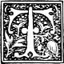
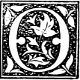

M R. and Mrs. Moore and their son were to leave early the next morning , and as the day passed on , and George heard nothing of the stolen money , he began to think the loss would not be found out till he had gone ; and then , he thought , he should be quite safe . He did not dare to spend it now , lest the Bradford children should wonder where the money came from ; but when he went home , he could easily do so without discovery . He had been visiting at his uncle 's before he came here , and it would be very easy to say he had given it to him . The last time he had been there , his uncle had given him five dollars ; but this time , nothing . There were , or there had been , more than five dollars in that box ; why had he not taken it all ? It was just as easy to say he had received five dollars as two ; and when it was missed , it would be thought some of the servants had taken it , or that it had been lost through some of Maggie 's carelessness . He had gone so far in sin now , that he did not hesitate to go deeper and deeper ; and determined , if possible , to have the rest of the contents of the box .
That evening it seemed as if `` chance , '' as he called it , was again about to favor him . Mrs. Stanton and Miss Annie were there , and after dinner all the ladies and the younger children were gathered in the parlor ; while the two boys were at their lessons in the little study-room at the head of the stairs . Mr. Moore was out . Mr. Bradford had left the room a short time since , saying he , too , must go out for a while , and the servants , George knew , were at their tea . Now was his time .
Making some excuse to leave the parlor , he ran up-stairs till he reached the first turning . The door of the study-room stood ajar . Pshaw ! The boys would hear him . He peeped in . No one there but Harry , studying after his usual fashion , with his elbows on the table , his head between his hands , and his fingers thrust into his ears to shut out all sound that might take his attention from his book . Fred must have gone to his own room in the third story . He should hear him if he came down . Headlong , noisy Fred was sure to give notice of his coming .
But he must make haste . There is not a moment to lose . Almost forgetting his caution in his guilty hurry , he ran quickly up the few remaining steps , and along the hall to Mrs. Bradford 's room . He stole in as he had done once before . The jet of gas in the burner over the dressing-bureau which held the coveted prize was turned down very low , but the bright fire dancing in the grate made the room quite light enough for his guilty purpose .
He opened the drawer and took up the box . How light it was ! and there was no rattle of pennies , none of what dear little Maggie had called , in the joy of her heart , `` her log-cabin music . '' He touched the spring , and the box flew open . Empty ! He stood for a moment looking into it , then turned it up to the firelight to make sure there was nothing within . As he did so , he heard steps behind him ; a hand was laid upon his shoulder , and looking up with a start , he saw Mr. Bradford 's face sternly bent upon him , while at his elbow he met Fred 's clear , honest eyes blazing with scorn and indignation . His own fell to the ground , and there he stood , like the mean , pitiful thing he was , trembling and cowering , the open box still in his hand .
There was a moment 's silence , and then Fred broke forth .
`` So it was you , you rascal ! you mean , sneaking , cowardly thief ! You are the fellow that robs little girls of their hard-earned money ! You -- you -- you -- '' Fred 's passion was choking him .
`` Hush , hush , my son ! '' said Mr. Bradford , sadly ; `` it is not for you to reproach this unhappy boy . Leave him to me . Go to your play , if you can play after what you have seen . ''
Fred laid both his own hands on that which rested on George 's shoulder . `` Take your hand from him then , father ; he is not fit to be touched by an honest man , by an honorable gentleman ! A thief ! ''
`` Go , go , Fred , and do not speak of this till you see me again . ''
Fred obeyed , as he knew he must when his father spoke in that tone .
`` Now , '' said Mr. Bradford sternly to the guilty boy , `` go in there ; '' and he pointed to the door of his dressing-room .
Trembling , and fearing he knew not what , but not daring to disobey , George did as he was told . Mr. Bradford followed , silently put beyond George 's reach everything on which he might lay his hands , locked every drawer and closet , and then turned to leave the room .
George started forward . `` What are you going to do ? '' he stammered .
`` Leave you here till your father comes . I can not deal with you , for , thank God , you are not my child . ''
`` Oh , do n't , do n't ! '' said the wretched boy , falling on his knees . `` Oh , I did not mean to -- I was only looking -- he will punish me so -- I would not have taken -- ''
`` Hush , hush , '' said Mr. Bradford , `` and do not kneel to me . Do not add to your sin by trying to deny it , but think over what you have done ; and when your poor father comes , be ready to make confession to him , and to the God against whom you have sinned . ''
`` But do n't tell father ; he will be so angry ; he minds such things so much . He -- he never would forgive me . ''
`` And yet the son of such a father could do this terrible thing ? I grieve to tell him , George ; rather , far rather , even for my own sake , would I pass over this in silence , and let you go unpunished ; but it is a duty I owe to you , as well as to him , not to let you go on unchecked in sin . I see , too , poor boy , that it is the fear of punishment , not of distressing your kind father , which makes you so anxious that I should not tell him . You do not yet see your guilt , unhappy child ; you only dread the pain and shame which it has brought upon yourself . ''
As Mr. Bradford ceased speaking , Mr. Moore 's short , quick step was heard in the hall , and the next moment he rapped upon the door . Fred , going down-stairs , had met him coming in , and was asked where George was . He had answered , `` Up-stairs ; '' but he had been so shocked and distressed by what he had seen that Mr. Moore had noticed his manner , and asked if anything were wrong with George . Fred would not say what the trouble was , but told Mr. Moore where he would find his son .
Mr. Bradford opened the door .
`` Fred told me that George was here , '' said Mr. Moore , looking much disturbed . `` What is wrong ? '' he asked , as he saw his son 's guilty , miserable face .
`` Will you tell your father , George , or shall I ? '' asked Mr. Bradford .
But George only cried and sobbed , saying , `` he did not mean to -- it was very hard -- he was only looking '' -- till Mr. Moore once more asked Mr. Bradford to explain what all this meant .
Mr. Bradford told the story in as few words as possible , -- how his little daughters had shown George the secret of the box , telling him why they were laying by the money ; how that morning two of the notes had been missed , and the false one found in their place -LRB- as he spoke , taking the bill from his pocket-book and handing it to Mr. Moore -RRB- ; how Mrs. Bradford had put the rest of the money in a safer place ; and lastly , how he and Fred had just seen George go to the drawer and take out the box , as if with the intention of adding to his sin by a new theft .
It was a hard thing for Mr. Bradford to do ; he knew how he should feel himself if one of his own boys had done this . He was very much grieved for his friend , and when he had told all as gently as possible , he went away , and left him alone with his unhappy son . What passed between them it is not necessary to tell you . George would have denied his guilt even now , but the false note in his father 's hand made this impossible .
Maggie and Bessie did not see him again , for Mr. and Mrs. Moore left the next morning at an hour even earlier than they had intended ; for after this terrible sorrow had come upon them , they felt that they could not bear to meet any of Mr. Bradford 's children again .
Perhaps you may like to know how Fred and his father discovered George 's guilt . It so happened that Fred 's quick temper had brought him into more trouble at school , and he did not know exactly how to act in the matter . He had finished his lessons , and was thinking this over when he heard his father come up-stairs and go to his dressing-room .
`` I 've a great mind to tell papa , and see what he says of it , '' he said to himself . To think and to do were with Fred one and the same thing ; and the next moment he was with his father , asking if he would wait and hear his story . He might have been sure of that ; Mr. Bradford always had time to spare if his children needed his help or advice .
Fred told his story , and they were sitting talking it over in low tones when George 's step was heard in the next room . The dressing-room was quite in the shade , and though George neither saw nor heard those who were within , he himself was plainly seen through the open door , at his guilty work .
And now , like our Maggie and Bessie , we need have no more to do with this poor boy , and will take leave of him . The little girls were not told that the thief had been discovered . Their mother thought it would only shock and distress them , while it could serve no good purpose for them to know it . They wondered , and talked of it between themselves for a few days ; and then there were so many pleasanter things to think of that they forgot all about it .
 T HESE were indeed pleasant times , and very happy children were our Maggie and Bessie . The only trouble was that night would come , and put an end to first one and then another of these delightful days , and that , as Maggie said , they had to stop enjoying themselves `` just to go to sleep . ''
`` I wish the sun always shone in this country , '' she said , `` and that night never , never came . ''
`` What would the little children on the other side of the world say to that ? '' said papa . `` If you had the ruling of day and night , and kept the sun all the time on one side , how do you think they would like to have it always night ? ''
`` Oh ! I did not think about that , '' said Maggie . `` I suppose it would be pretty selfish . I guess I had better wish for two suns , one on our side , and one on theirs . ''
`` Or , better still , rest satisfied that our heavenly Father has ordered all things , night and day , sun , moon , and stars , as is best for his own glory and the happiness and comfort of all his creatures , '' said Mr. Bradford . `` I think even my wide-awake Maggie would tire of the light of the sun if it should shine for the twenty-four hours , day after day , and the quiet , blessed night never come , when we might close our tired eyes , and take the rest we need . ''
`` Could we not sleep in the day-time if we were tired , papa ? ''
`` We might sleep , but not as well or as pleasantly as we now do when all is dark and quiet . ''
`` Then if I was to wish for two suns , I 'd better wish we should never be tired or sleepy . ''
`` So you might go on wishing forever , and if you had the power , changing first one and then another of the wise laws which our Father in heaven has made for the good of all . And what distress and confusion this would make ! What a miserable , unhappy world this would be if you , or some other weak , human creature who can not see the end from the beginning , and can not tell what would be the consequence of his wishes , were allowed such power . No , we may thank God , not only that he does what is best for us , but also that he has allowed none but himself to be the judge of this . ''
`` So I had better be contented to have the night as it is , papa ; is that what you mean ? Perhaps other people would not like to have things as I did , and they might think I was a very disagreeable child to have them my way ; and I should not like that at all . ''
`` I would not be glad if there was never any night , '' said Bessie , who was always more ready than her sister to go to rest .
`` Then I wont wish it , '' said Maggie ; `` and I shall just always try to think ` our Father ' knows best , even if I do n't feel quite suited myself . ''
One afternoon , about dark , it began to snow , much to the children 's delight ; for grandmamma had promised a sleigh-ride whenever it should be possible . All night the soft , feathery flakes fell gently and steadily , so that in the morning the ground was covered thickly with a beautiful white mantle .
Since the weather had become cold , each day , after breakfast , Maggie and Bessie were allowed to throw out crumbs for the sparrows and chickadees , who came about the house to find something to eat . The birds seemed to know the hour almost as well as the children , and seldom came for their breakfast before the right time . But on this morning the little girls were scarcely down-stairs , when their brother called them to come and see what a flock of their pets had already gathered on the piazza and window-ledge . For the ground being all covered with snow , there were no stray crumbs or seeds to be found ; and the chickadees and sparrows , being early risers , found themselves hungry and in need of their regular breakfast rather sooner than usual ; and now the prints of their tiny feet were to be seen all over the snow , while twice the ordinary number of birds hopped about the piazza , or perched upon the railing and window-ledge , chirping away , twitching their little heads from side to side , and watching the children with their bright , twinkling eyes as if asking what made them so late .
Away ran Maggie to ask Patrick for a piece of bread , and came back with a rush and a jump and a sudden shove at the window which put every mother 's bird of them to flight . In her hurry to feed them , she quite forgot that they were so easily startled , and was much distressed when she saw them all flying off in a great fright .
However , the bread was crumbled and thrown out ; and by the time prayers were over , the whole flock were back again , pecking away with much satisfaction , and twittering and chirping as if they were telling each other what very kind people lived in this house , and how thankful they should be for such good friends . At least , this was what Maggie told Franky they meant , as he watched them with his chubby face pressed close against the window-pane .
`` No shoes and stottins , '' said he . `` Poor birdies ! Dere foots too told . Mamma buy shoe for birdies . ''
His little sisters thought this very sweet and funny in Franky , and they hugged and kissed him till he thought he had said something very fine , and kept repeating it over and over again .
Pretty soon it stopped snowing , and the sun came out . Then Maggie and Bessie were much amused in watching the people clearing the snow from the sidewalks , and the boys snow-balling one another . Presently Mrs. Bradford missed Franky from the room . As she had the baby , she could not go after him , but sent Maggie .
She ran from room to room , but could not find her little brother . When she opened the nursery door , and put in her head , she rather wondered to see the bureau-drawers open , and several things lying scattered over the floor ; but she did not think much about it , for there was no one there , and she must find Franky . As she went down-stairs again , she saw the back-door was standing open , and went to shut it . Here she met Franky coming in with very rosy cheeks , and his face all smiles , as if he were well pleased with himself .
`` Oh , Franky ! '' said Maggie , `` what made you go out in the cold with no hat and coat ? Did n't you hear me calling you ? ''
`` Yes , '' said Franky .
`` Then why did n't you come ? ''
`` Me too busy , '' said the little boy ; and away he ran into the parlor , while Maggie went to shut the door . To her great surprise , she saw the piazza strewn with shoes and stockings , -- her own , Bessie 's , and Franky 's , and even a pair or two of baby 's little worsted socks . She came in , and followed Franky .
`` Franky , '' said Mrs. Bradford , `` did you not hear mamma calling ? ''
`` Yes 'm , '' said he again , `` but me too busy . ''
`` But you must always come right away when mamma calls . What were you doing ? ''
`` Me dave de birdies shoes and stottins , '' said Franky ; `` dere foots too told . ''
Then Maggie told her mother what Franky had done , and nurse coming in just then , Mrs. Bradford sent her to see . Sure enough , the little rogue had gone up-stairs , and filling his skirt with his own and his sisters ' shoes and stockings , had scattered them upon the piazza , thinking that the birds could make use of them . Maggie and Bessie thought this a most capital joke , and even nurse , who was much displeased , could not help smiling as she heard their merry peals of laughter . Mamma did not scold Franky , for she did not think he meant to do anything naughty , but she told him he must never do so again , and that the birds did not need shoes and stockings to keep their feet warm .
`` But , mamma , '' said Maggie , `` how is it the birds do not have their feet frozen in the snow and the cold ? If we were to go hopping about with bare feet , it would hurt very much , and we would be sick ; but the sparrows do not mind it at all . ''
`` Because God has fitted them , dear , as he has all his creatures , for the life which he means them to lead . He has given to the sparrows and chickadees , not soft , tender feet like yours , but horny claws on which they can hop over the snow and gravel without feeling the cold , or being hurt . See by this how he has cared for all he has made ; the smallest or weakest bird or animal is known and watched over by his all-seeing eye . When our Saviour was on earth , he chose these little birds to teach us a most precious lesson . Once when he was talking to his disciples , after telling them that they were to fear God , and not man , he wished to show them how constant and watchful was God 's care of his people , and he said , ` Are not two sparrows sold for a farthing ? and one of them shall not fall to the ground without your Father . But the very hairs of your head are all numbered . Fear ye not therefore ; ye are of more value than many sparrows . ' A Roman farthing was less than a cent and a half , so that one of these sparrows cost less than a penny , and this was meant to teach us that if each of these little birds which was worth so small a sum is known and remembered by the Almighty ; if not one of them can fall and die unless he sees it , how great must be his care and love for us , whom he has called ` of more value than many sparrows , ' and for whom he gave his only Son to die upon the cross . It is a very sweet and comforting thought to know that he never forgets us , and that no harm can come near us , unless he knows and permits it . ''
`` And it ought to make us think that he sees what we are doing , and knows if we are even a little bit naughty . Ought it not , mamma ? '' said Bessie .
`` Yes , darling , and it should make us very careful not to grieve or displease him by even a wicked thought or angry feeling . ''
'' 'Cause when he sees it , he thinks we are ungrateful about his Jesus , '' said the thoughtful little Bessie .
This was Saturday and a holiday , when the children had no lessons , and the boys did not go to school ; and about twelve o'clock Harry and Fred came in with Tom Norris , Walter Stone , and Johnny Ransom ; they were all four going into the yard to build a snow-man , and Harry begged that his sisters might go , too , saying that he and Fred would take care of them . Mamma had no doubt of this , and she said Maggie might go , but she was afraid to have Bessie play in the snow , lest she should take cold . Maggie said she would not go if her sister might not ; but Bessie told her to go , and she would stand at the library-window and watch them at their work . Maggie still hesitated , but her mother said she would see that her sister did not feel lonely while she was gone , and having been well wrapped up , she at last went with the boys .
To say that Bessie was not disappointed and did not very much wish that she , too , might have a share in the delightful play , would not be true . But though a tear came into her eye as she saw the others run off , she bore it bravely .
`` Mamma , you would be sure to let me go if you thought it best ; would n't you ? '' she asked , lifting her face to her mother to be kissed .
`` Indeed , I would , my sweet child ; you may be certain mamma would never take from you any pleasure she thought safe for you ; but it would be wrong and foolish in me to let you go when you would probably take cold and be sick . And now what shall we do to amuse ourselves . If you like to stand by the window and see the boys , I will bring my work and tell you a story , or we will sit by the fire , and I will read to you . ''
Bessie chose the first , for she said that would be two pleasures at one time .
When Mrs. Bradford came back with her work-basket , Bessie was standing on a chair by the window , and she turned to her mother with a very bright face .
`` Mamma , '' she said , `` come and see what a nice time Maggie is having . I think I am ` most glad you did n't let me go , 'cause if I was playing myself , I could not see how much she ` joys herself . Just hear her laugh ! '' and Bessie laughed merrily herself .
Mamma stooped and kissed her sweet-tempered , generous little daughter , who , instead of fretting and making herself and others miserable because she could not do as she wished , not only contented herself with the pleasures which were left to her , but really tried to find comfort in her very disappointment .
Maggie did indeed seem to be enjoying herself . The boys had begun their snow-man , but she found that rather hard work , and , having asked leave , was snow-balling her playfellows with all her might . She was not very apt to hit them , for her small hands could not take very sure aim in her thick worsted mittens ; but whenever she missed her mark , she became only more eager , and , hit or miss , her gleeful laugh rang out all the same . Mrs Bradford found that no story was needed ; so engaged was Bessie in watching the frolicsome antics of her sister , that she had no thought of anything else . In the height of her play , Maggie did not forget every few moments to stop and kiss her hand and nod and smile at the two dear faces in the library-window . When her mother thought she had been out long enough , she called her in , and she came all glowing and rosy with her play in the fresh , cold air .
`` Tom says the sleighing is splendid . I hope grandmamma wont forget us . ''
`` No fear of that , '' said mamma ; and she had scarcely spoken when Aunt Annie 's smiling face appeared at the door .
`` Well , little polar-bear , where did you come from ? '' she asked , taking hold of the bundle of furs and wrappings which called itself Maggie .
`` Out of the icebergs to eat you up , '' growled Maggie , pretending to be the bear Aunt Annie had called her .
`` Very well , sir , I suppose you have a good appetite since you have come so far ; but , of course , if I am eaten up , you can not expect my mother to go sleigh-riding with the fellow that has made a meal upon her child . ''
When Maggie heard this , she declared that she was no longer a polar-bear , but just Aunt Annie 's own little niece , who would not eat her up even if she were starving , and whom it was quite safe to take sleigh-riding . Both she and Bessie were wild with delight . They could scarcely eat their dinner , and the moment it was over , ran away to the nursery to be dressed for the ride .
When the sleigh came to the door , Aunt Annie said she had two polar-bears to ride with her , and pretended to be quite alarmed . But both the bears proved to be very well-behaved , and neither bit nor scratched ; although they did now and then hug a little as they sat , the one between mamma and grandmamma , and the other between Aunt Annie and Aunt Helen ; for Aunt Helen had come from Riverside to make her mother a visit and to stay till after Christmas .
`` We are to have a Christmas tree , Aunt Helen , '' said Maggie .
`` And all our people are to come , '' said Bessie .
`` We have a great deal to do yet , '' said Maggie . `` There are a great many presents to buy , and Christmas will be here one week from yesterday , mamma said so . Aunt Annie , you said you would take us shopping for those things mamma is not to know about . ''
`` Very well , '' said Aunt Annie , laughing . `` I suppose I may as well give up Monday to it , if your mother will let you go . ''
Mamma was quite willing it should be so , if the weather were fine . The things which she was not to know about were her own , and papa 's Christmas presents . The book-marks were all worked . Those for Colonel and Mrs Rush were quite finished and laid away ; but the two which were intended for papa and mamma still wanted the ribbon , and this was one of the things to be bought . Then Maggie was to buy some trifle for papa , and Bessie one for mamma . They were not trifles to them , however , but very great and important purchases , and there was a great deal of whispering and hiding in corners . It was rather a singular circumstance , but one which was very convenient , that mamma never asked what they were doing , or even seemed to see that they were engaged with some work in which she was not asked to help .
They had a lovely drive . All the sleighs and cutters in the city seemed to have turned out for the first fine sleighing ; and the air was full of the jingling of the merry bells , and the shouts and laughter of the boys as they pelted each other with snow-balls , or went skimming along on their sleds . The Central Park looked beautiful in its pure white dress which lay so smoothly , just as it had fallen from the hand of the kind Father above ; and Maggie said the trees and bushes thought white feathers were becoming , and so had dressed themselves out as if they were going to a Christmas party .
 O N Monday afternoon Aunt Annie came for the children , according to promise , and Aunt Helen was with her .
`` For I have a little business with Maggie , '' said Mrs. Duncan ; `` but no one else is to know what it is , so mamma and Bessie are to ask no questions . ''
This was delightfully mysterious .
`` Nobody is to ask questions at Christmas-time , '' said Bessie , gravely . `` Mamma made that yule . ''
`` And it is a wise one too , '' said Aunt Helen .
`` How long do you suppose our Meg can keep a secret , Aunt Helen ? '' asked Fred .
`` I know she has kept one for three months so well , that I am going to trust her with a second . ''
`` Pretty good for Midget , '' said Fred .
It was indeed a triumph for heedless Maggie . So carefully had she kept the secret of the picture , not even saying , `` I know something , '' or , `` Something is going to happen , '' that mamma suspected nothing ; and though Bessie knew there was a secret , she had not the least idea what it might be .
Aunt Helen started first with Maggie , telling her sister Annie and Bessie to meet them in a certain book-store .
`` Now , Maggie , '' she said when they were in the street . `` I am going to reward you for keeping our secret by letting you choose the frame for the picture . ''
The little girl was delighted , but when they reached the store , and she saw frames of all kinds and sizes , she became confused , and could not tell which to decide upon .
`` That one is too large , '' said Mrs. Duncan , as Maggie pointed out one she thought she should like . `` No , dear , that is too small again . There , '' and her aunt laid four or five of the proper size , in front of the child ; `` any of those will do ; suppose you choose one from among them . ''
So , after some more hesitation , Maggie chose a dark walnut frame , with silver nails ; and Aunt Helen said she had shown very good taste . Then Mrs. Duncan gave the man directions about the picture , which she had sent to him in the morning . He bowed and wrote them down , and then said , looking at the rosy , happy face which was peeping at him over the counter , '' ` Tis a capital likeness too , ma'am ; never saw a better . ''
`` Aunt Helen , '' said Maggie , as they left the store , `` did that man mean he knew our Bessie , and thought you made a good picture of her ? ''
`` I thought you were to ask no questions at Christmas-time , '' said Mrs. Duncan .
`` Oh ! '' said Maggie . `` I did not know I must not ask about things like that ; I thought mamma meant bundles and work , and such things . ''
Aunt Helen only laughed , and began to talk of something else , and presently they came to the book-store , where Annie and Bessie were waiting for them .
At the lower end of this store was a large table , and upon it were a number of beautiful and useful things intended for presents . There were writing-cases and work-boxes , paper-cutters and weights , beautiful pictures and all kinds of knick-knacks .
`` Aunt Helen , '' said Maggie , eagerly , `` do you not think we could find something on that table that would make nice presents for papa and mamma ? ''
`` I do not doubt it , '' said Mrs. Duncan , `` if you could pay for them ; but I fear , dear Maggie , all those pretty things are quite too expensive for you to buy . ''
`` Well , '' said the little girl , with a sigh , `` I suppose we may look at them while you and Aunt Annie buy your books ; may we not ? ''
`` If I thought I could trust you not to touch anything , you might . But some of those things are very costly , and you might do much mischief if you meddled with them . ''
`` Aunt Helen , '' said Bessie , looking up with a very sober face , `` we never meddle when we go shopping . Mamma has taught us that , and gen-yally we yemember what she tells us . ''
`` I believe you do , '' said Mrs. Duncan , smiling . `` Well , then , I will trust you ; '' and she and her sister walked to the other end of the store to look at some books , leaving the children to amuse themselves .
A gentleman was sitting near the table reading a newspaper , and when Bessie had spoken out so solemnly , he had looked up with a twinkle in his eye . The little girls did not notice him , however , nor did he seem to be paying attention to them . They walked round and round , now peeping at this thing , now at that , but never offering to lay a finger upon one .
`` Oh , '' said Maggie . `` I do wish , I do wish we could buy some of these beautiful things for papa and mamma ! But I suppose we 'll have to wait till we 're quite grown up , and then perhaps they will all be gone . Just see this paper-weight , Bessie . Would it not be nice for papa ? But I think it costs a great deal , and I can only afford twenty cents . ''
`` And see this lovely little picture , Maggie . Mamma would like it so , I know . See , it has the cross and a pretty vine all around it , and some words . Can you yead it ? ''
`` S-i-m -- sim , '' spelt Maggie , `` p-l-y -- ply , simply -- to -- thy -- cross -- Oh ! it must be ` Simply to thy cross I cling . ' ''
`` Yes , '' said Bessie , `` it 's out of ` Yock of Ages , ' and mamma loves that hymn so much . Oh ! I do want it for her ! Do you think twenty cents will buy it , Maggie ? ''
`` I guess not ; but we 'll ask . I 'd like to be grown up for two things , so I 'd never have to go to bed till I chose , and so I could have plenty of money to give everybody everything they wanted . Just see that picture of a dog , Bessie . Does it not look like our Flossy ? I wish it was nearer , so we could see it better . ''
`` I ca n't see it at all , '' said Bessie , raising herself on tiptoe , to gain a view of the picture which was in the center of the table . `` I wish it was nearer , but we must not touch . ''
`` I 'd like to see him better , too , '' said Maggie . `` I want to know if he really is like Flossy , or if he just looks so 'cause he is so far off ; I know I would n't break it either if I moved it ; but then -- we promised . ''
`` And mamma said we were never to touch without permission , '' said Bessie ; `` and we 're trusted . ''
They both stood for some minutes , Maggie looking wishfully at the dog , Bessie still stretching up her neck in a vain attempt to see him , when Maggie suddenly said , `` Bessie , mamma said it was not right to put ourselves in the way of temptation , and I think I am doing it . This was just the way I did the day I meddled with papa 's inkstand . I stood looking at it , and looking at it , and wishing I had it , till at last I touched it , and did such a lot of mischief . I sha 'n' t look at the dog any more , and let 's go to the other side , and we wont think about it . ''
As they turned to do as Maggie proposed , they saw a miserable-looking face peeping in at the glass door . It was that of a boy about eight years old , poor , and in rags , his features all pinched with cold and hunger . He was gazing wistfully at the pretty things and the comfortably-dressed people who were within , and perhaps wishing that Christmas brought such happiness to him . As one after another passed in and out , he held up his thin hand and asked for help , but few heeded him .
`` See that poor boy , '' said Bessie ; `` I do n't believe he has any money to buy Christmas presents . ''
`` I 'm afraid not , '' said Maggie ; `` I guess he has not enough to buy bread and fire ; he looks so cold and thin , and what dreadful old clothes he has ! ''
`` Poor fellow ! '' said Bessie , in a pitying voice . `` I s ` pose he would like some money very much . Do you think we could spare him a little of ours , Maggie ? ''
`` If we do , we ca n't spend so much for our presents , '' answered Maggie , pulling out her portmonnaie from her muff and looking doubtfully at it .
`` Do you think papa and mamma would mind it , Maggie , if we each gave the boy five cents , and did not spend quite twenty for them ? ''
`` I do n't like to take it off papa 's and mamma 's presents , '' said Maggie . `` They are so very good to us , I want to give them all we can ; but , Bessie , I 'll tell you . You know I was going to spend ten cents for you , and you ten cents for me . Now we might only spend five cents for each other , and then we can each give five to the boy . I do n't mind , if you do n't , Bessie . ''
`` No , Maggie , I 'd yather give it to him , and then maybe he 'll look a little glad . ''
So each taking five cents from her pocket-book , they ran to the door and put the money into the poor boy 's hand , who did indeed look `` a little glad '' as he received it .
When they came back to the table , the picture of the dog stood just in front , where not only Maggie but Bessie , also , could see it quite plainly .
`` I hope nobody will think we meddled with that picture , '' said Bessie .
`` No one shall think so , '' said the gentleman , who had been sitting near , as he rose and threw down his paper . `` I moved it myself . ''
`` Then , if you please , sir , '' said Bessie , `` will you tell the store people you did it ? I s ` pose they would n't think you were naughty , 'cause you 're big ; but we are forbidden to touch , and we were trusted . ''
`` And I see you are fit to be trusted , '' said the gentleman , smiling ; `` and I have a right to touch what I please here , for the store and all the things in it belong to me . Is there nothing upon the table which you would like to buy ? ''
`` Yes , sir , '' said Bessie , while Maggie was hanging her head in a terrible fit of shyness at being talked to by this stranger , `` if we could afford it ; but we think all these things cost too much . We have not a very great deal of money . ''
`` Let me hear what you would like to have , and I can tell you the price , '' said the gentleman .
`` How much is that paper-weight ? '' asked Bessie .
`` Fifteen cents . ''
Bessie 's eyes sparkled , and Maggie looked up in great surprise .
`` And this cross , sir , how much is that ? '' said Bessie .
`` That , also , is fifteen cents . ''
`` Then we 'll take them both for papa and mamma . I think you are a very cheap gentleman , sir . We thought they would be too ` spensive for us to buy , '' said the little girl . `` Mamma will be very pleased with this lovely picture . ''
`` I hope so , '' said the gentleman . `` Such a good mamma as you have deserves to have a present that will please her . ''
`` Do you know my mamma , sir ? '' asked Bessie , as she handed him the price of her picture .
`` No , but I am sure your mamma is a lady and a good woman , although I do not know her , and I am sure , also , that she has taught you well , and that you have paid heed to her lessons . ''
Bessie was herself quite certain of all this , but she wondered how the gentleman could know it when he was a stranger to her mother . Perhaps you and I may be able to guess .
`` And papa deserves a nice present , too , '' she said ; `` he is an excellent gentleman . ''
`` I have not a doubt of it , '' said her new friend . `` And now I suppose you would like to have your purchases wrapped up , so that your papa and mamma may not see them before the proper time . ''
`` We would like to show them to our aunt first , '' said Bessie ; and she and Maggie scampered off with their treasures .
But when Aunt Helen saw them , she said there must be some mistake . `` Those things are worth much more than you have paid for them , my darlings , you have misunderstood ; or some one has been joking with you . ''
`` Indeed , indeed , Aunt Helen , we did not make a mistake , and the gentleman was quite sober , '' said Maggie .
`` Who sold them to you ? '' asked Mrs. Duncan .
Bessie pointed out the person , and Mrs. Duncan went to speak to him . Her little nieces looked after her with anxious eyes , fearing lest they might have made some mistake , and that their new treasures would be taken from them , and Bessie ran up just in time to hear the gentleman say , with a laugh , `` Surely , I may put what price I please upon the articles I have for sale . ''
Mrs. Duncan laughed , too , and said , `` Yes , certainly , but -- ''
`` I assure you , I have been amply paid , madam , '' said the gentleman , `` and I beg you will consider the matter settled . It is all right , little one , '' laying his hand on Bessie 's head as she looked up at him ; `` you have made no mistake ; '' and then taking the paper-weight and picture , he wrapped them in paper and returned them to the children .
From this store they went to another , where they were a long time choosing the ribbon for their book-marks , while Aunt Helen and Annie waited with wonderful patience till they had decided this important question . Here , also , a pincushion was bought for nurse , and an emery-bag for Jane . Then Maggie , coming back from a show-case , about which she had been spying , begged Aunt Annie to go to the other end of the store , and on no account to turn her head . Aunt Helen was taken to the case , and a box was pointed out which Maggie thought would be the very thing for a ribbon-box .
`` But you can not buy that , dear , '' said Mrs. Duncan ; `` it is too expensive . ''
`` Oh , no , Aunt Helen ! it is marked five cents , -- just see , '' said Maggie .
`` My poor pet , that is five dollars , not five cents . ''
This was a great disappointment , for Maggie had quite set her heart on the box ; but , of course , she and Bessie could not give five dollars , since they had not the half of that to spend .
`` It 's real mean , '' she said , angrily , `` to go and cheat children so , and make them think it 's five cents when it 's five dollars . ''
`` Do not speak so , dear , '' said her aunt ; '' ` cheat ' is not a pretty word for you to use , and those numbers mean five dollars very plainly to any one who can read them . Ask papa to teach you about that to-night . ''
`` Let 's go back and buy all our presents of that gentleman , '' said Maggie . `` He knows how to keep store a great deal better than these people . ''
`` Better for your purses than for his own , I think , '' said Mrs. Duncan , laughing . `` No , dear , we have bought enough there for this time . We will find something else for Aunt Annie . ''
`` Maggie , Maggie , '' called Bessie , `` come and look at the cunningest glass animals you ever saw in your life . ''
Maggie 's displeasure was quite forgotten as she saw the pretty toys , and as she and Bessie were looking at them , Aunt Annie joined them .
`` What a beautiful glass cat ! '' she said . `` I wish Santa Claus would have one like it on the Christmas-tree for me . I should put it on my what-not , and I do not believe that a mouse would dare to show so much as the tip of his tail in my room , if I had this pussy to guard me . ''
`` Oh , Aunt Annie , '' said Maggie ; `` just as if a mouse would be afraid of such a mite of a glass kitty ! He would know it could not hurt him . ''
`` Well , '' said Annie , `` if you see Santa Claus , just tell him I would like to have it . ''
Maggie turned and looked at Bessie with a shake of her head , and eyes which very plainly asked the question . `` Shall we buy it for her ? '' and Bessie answered with a nod which said quite as plainly , `` By all means . ''
So they begged Aunt Annie to walk away once more , a request which she had quite expected , and she went off laughing . Bessie asked the price of the cat , and was told , `` six cents , '' so there was no difficulty about that , and pussy was bought . Then , after some whispering , Mrs. Duncan was sent after Annie , and a glass deer was bought for her étagere . The woman who served the children brought a small box , and putting some cotton in it , laid the deer and the cat upon it , and gave the box into Maggie 's hand , saying that she could carry them safely in this way . Maggie told Bessie that the woman knew how to keep store pretty well , after all .
One or two more small purchases were made , and then they went home . They went shopping several times with mamma or their aunts before all their presents were bought ; but two days before Christmas everything was ready , -- the book-marks with , `` To my dear Father , '' and `` To my dear Mother , '' as well as those for Colonel and Mrs. Rush , a watchman 's rattle for noisy Fred , and for Harry , since he was fond of birds , a yellow wooden canary in a pewter cage . It would take too long to name each article , and the person for whom it was intended ; but not one of the family , or of their intimate friends , was forgotten . Papa and mamma , brothers and sisters , aunts , uncle , and cousins , grandmamma and the two grandpapas , Colonel and Mrs. Rush , Jemmy and Mary Bent , and even each servant in the house were remembered and provided for ; and the older people were quite astonished to see how much the children had done with the two dollars and sixty cents with which they had started .
And now began the grand preparations for the important day . The Christmas-tree in its square green box came home , and was carried into the library , where the children were now forbidden to go . The `` grown-upers , '' as Fred called them , were passing in and out all the time , going in laden with parcels of all shapes and sizes , and coming out empty-handed . But if the older people had their secrets , the children , also , had theirs , not the least of which was one in which the four eldest were engaged , and which was carried on for a while in the boys ' room .
The tree was not to be displayed until the evening of Christmas-day , when there was to be a large family dinner at Mrs. Bradford 's , to which Colonel and Mrs. Rush were invited .